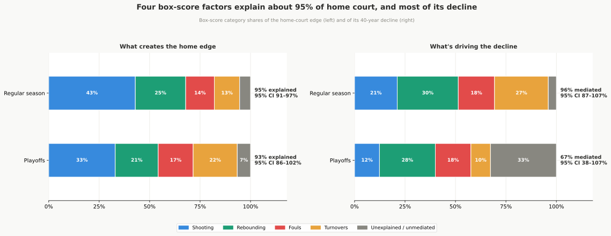
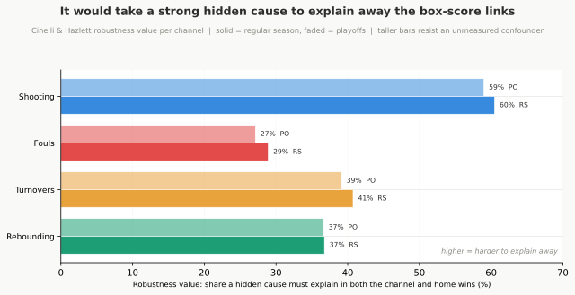

Detailed Outline — home_court_findings.md
Draft
Introduction (Intro / TL;DR)
- Four guiding questions (bolded in the intro, in section order): (1) Has home court really shrunk, and by how much? (2) What is it made of, and why does it exist? (3) If it changed, what changed it? (4) What do we think changed it, but didn’t?
- Headline answers:
- Change is real & one-directional: regular-season home win rate ~65% → 55%; playoffs ~68% → 58%. Shape = a slow gradual fade + steeper stretches in the mid-1990s and post-2017, with a brief visible uptick around 2002-04 in between.
- HCA is built from four box-score categories (shooting, rebounding, foul calls, turnover margin) that capture ~95% of it, shooting the largest; plus smaller rest & altitude boosts for specific matchups.
- Decline drivers (four categories, ~96% of RS decline): fairer officiating, the shift to three-point shooting, the fading home rebounding edge, and the closing turnover gap. Rebounding is the largest single channel and is independent of the three-point shift; the intro names this as the surprise, that the biggest driver of the decline is the one factor the data can measure but not explain.
- Why it matters: In the 1980s and 1990s, a weaker team playing at home in the playoffs won 65% and 66% of those games, nearly the same rate as the stronger team hosting. Today that number is 49%. Home court used to compensate for being outmatched; it no longer does. The decline also reveals three real changes in the game: officiating grew more even, the three-point move flattened the home shooting edge, and teams abandoned the offensive glass. It corrects the crowd assumption: arenas have stayed near capacity even in the years HCA bottomed.
- Ruled-out suspects: rule changes, travel, time zones, pace, crowd size, playoff format changes (best-of-seven shifts and Finals reschedules, incl. 2014), fewer back-to-backs (~8% of decline). Competitive balance is a partial exception: it can’t explain the long-run decline (parity is mean-reverting; HCA has declined steadily for 40 years), but year-to-year parity fluctuations show a weak association with HCA fluctuations in the same year.
- Scope: regular season vs. playoffs tracked separately (same direction, different timeline); ~52,000 games; tables in home_court_results.md.
- Article series pointer: the intro links to the eight-article web recut of this report (
home_court_series.html), and Appendix E’s companion table gains an Article Series row (web only). Navigation only; no findings content changed.
Section 1 — The 40-Year Decline
Q1: Has it changed?
- Core stat: Home win rate ~65 → ~55 per 100; ~quarter-point/year.
- RESULTS: Reg season GLM −0.244 pp/yr [−0.280, −0.209], p<0.001, total ≈ −10.3 pp; OLS −0.250 pp/yr, R²=0.745.
- RESULTS: Playoffs GLM −0.225 pp/yr [−0.359, −0.091], p<0.001, total ≈ −9.5 pp; OLS −0.216 pp/yr, R²=0.195; peaked ~68% → 58% today (~9 to 10 pt drop, noisier).
- Mostly one slow fade; two brief accelerations within it (not extra drops on top):
- Slow fade (~quarter-point/year) accounts for nearly the whole drop; changepoint test reads it as smooth, not a staircase.
- First (firmer) acceleration: mid-to-late 1990s, ~65% → 60%, traces to 1994–95 hand-checking crackdown. RESULTS era slope 1984–94: −0.522 pp/yr, p<0.001.
- Brief uptick ~2002–04: visible but only 3 seasons, not significant (p=0.23).
- Second acceleration: after 2017, below 56% — the three-point shift on the calendar; defers to §3 mechanism, not a separate event.
- Playoffs lagged: steady ~64% through 2017, then joined slide → 61% → 58%.
- Still near-universal today (Figure 2): most recent regular season, all but one team won more at home than on the road. Single-season dumbbell (home% blue, road% grey, gap bar; red = the lone team that won more on the road). Noisy snapshot of how widespread HCA still is, not a franchise ranking.
- Decline is league-wide, not team-concentrated (Figure 3): per-franchise year-slopes of the home-minus-road win gap, fit separately by OLS then split into true spread vs sampling noise (EB / variance-decomposition idiom). RESULTS: pooled league slope −0.49 pp/yr (p<0.001); observed SD of team slopes 0.213, noise-adjusted true between-team SD ≈ 0.00 (100% of spread is noise); 0/31 franchises with a positive raw slope. Every franchise faded at one shared league rate; no team stands apart as the cause. Regular season only (per-team playoff samples too small); playoff decline is itself league-wide.
- Era table moved to §4 (where rule changes are analyzed); in §1 the eras serve as the calendar the rest of the report runs on.
- Where the trend is headed: 3PA share approaching ceiling (~40%); league OREB rate approaching floor (~26%, down from 33%). If both forces are near their asymptotes, pace of decline should slow. Floor from empty-arena data: home teams won 51% with no crowd/bias/prep edge, probably the long-run lower bound. Information diffusion as mechanism is not basketball-specific: other sports investing heavily in analytics are likely on the same trajectory (prediction, not tested here).
- State-space forecast (Figure 4):
UnobservedComponentslocal-linear-trend on season home win %, RS and PO separately,get_forecast(5)with 80%/95% prediction bands. RESULTS: RS current smoothed level 54.9%, slope −0.3 pp/yr → 2031 central 53.5% [48.4, 58.6]; PO 58.8%, slope −0.3 pp/yr → 2031 central 57.1% [44.9, 69.3] (much wider, ~80 games/postseason). Central path keeps declining in both; entire RS 95% band for 2031 sits below the mid-1980s level (~66.7%). Projection of the current slope, not a rule-change prediction. Guard: forecast_keeps_declining. Figures:


Section 2 — What Creates Home Court Advantage
Q2: What makes up HCA?
- Referee foul calls and free throws (most consistent component; Dean Oliver’s “FT rate” factor):
- 1984–94 reg season: ~1.2 fewer fouls on home (RESULTS −1.23) → ~2 more FTA/game (RESULTS +1.97); playoffs ~1.6 fewer fouls (RESULTS −1.58) → ~2.4 more FTA/game (RESULTS +2.35).
- Playoff universality: 45 of 47 officials (≥50 playoff games) home-favoring; holds under all checks.
- Inline aside (new): answers “how can 2 FTA matter” right where the number first appears — the 1980s per-game FTA gap swung across a ~28-attempt range (P10 to P90) around that ~2-attempt average; only visible once thousands of games are pooled. Full distribution treatment deferred to new Appendix B. RESULTS: FOUL & FTA DIFFERENTIAL — PER-GAME SPREAD VS. THE AVERAGE EDGE.
- Shooting advantage: home shoot >1 pp better FG% (RESULTS 1984–94: +1.57 FG%, +1.56 eFG%); consistent across eras, both contexts.
- Shot selection: more attempts from close range, fewer mid-range → structural expected-scoring advantage. RESULTS shot zones 1995–01 reg: Paint +1.28, Mid-Range −1.24.
- Rebounding & ball control: ~1.5 extra rebounds (RESULTS REB diff +1.52) and ~0.4 fewer turnovers (TOV diff −0.38); together rival shooting.
- Box-score accounting (mediation): Dean Oliver’s Four Factors (eFG%, FT rate, TOV%, OREB%) are a complete set (every possession ends in a shot, turnover, FT trip, or rebound), so the payoff isn’t discovering which categories matter but quantifying each one’s share = ~95% of advantage (reg season); shooting (eFG%) biggest (>40%), then rebounding. §2 prose now opens on this frame (not buried at section end) and adds an explicit “where, not why” caution: the factors are where the edge shows up on the stat sheet, the root causes (crowd, rims, ref tendencies, travel) sit one layer below, some measurable, some only plausible.
- RESULTS level decomp (reg): eFG% 43%, REB 25%, Foul 14%, TOV 13%, unexplained 5%; category R²=0.615.
- RESULTS playoffs level: eFG% 33%, Foul 17%, TOV 22%, REB 21%, unexplained 7% (~93% total).
- Coefficient stability across eras: re-fitting the LPM within each of the six eras confirms the channel weights are nearly constant (eFG% +3.28 to +3.61 pp, Fouls −1.63 to −2.20 pp, TOV −3.19 to −3.57 pp, REB +1.57 to +1.70 pp). The pooled decomposition is not an artifact of blending very different periods. RESULTS: coefficient stability table in MEDIATION section.
- Rest & altitude (Figure 6):
- Rest: home better-rested wins 62.8% (+2.7 pp); away better-rested 57.6% (−2.6). RESULTS χ²(2)=79.22, p<0.001; +1.6 pp/day reg, +2.4 pp/day playoffs; no era change (LR p=0.474).
- Altitude (DEN/UTA): +7.9 pp reg season (RESULTS [+6.1,+9.7], p<0.001); absent in playoffs (−1.6, p=0.633) — team-quality confound.
- Playoff rest confounded: controlling for quality, rest shrinks to nothing (RESULTS rest +1.6 pp p=0.113; quality_diff dominant). Figures:


Section 3 — What’s Driving the Decline
Q3: What drove the change?
- Framing (intro, two-questions bridge + table): keeps two questions apart: where the decline shows up on the stat sheet (box-score accounting, clean answers) vs. what changed in the real world to cause it (the more interesting question; data settles only part). Honesty-as-feature: some causes proven, some proposed. Bridge table maps each category → share → real-world cause → proven/proposed: REB 30% (cause = teams stopped crashing the O-glass; proposed, data can’t say why), TOV 27% (half 3PA proven, half better visiting-team prep proposed → mixed), eFG% 21% (3PA shift; proven), Foul 18% (half 3PA + half fairer/more uniform officiating; proven). 3PT revolution runs through 3 of 4 rows (~half the decline) but its own channel (shooting) is only ~21%; REB is the largest channel and the one row 3PA never touches. The two proposed causes may share one root (analytics reaching all 30 teams).
- Shot selection changed in two ways (together ~21% of decline, both feeding the shooting line):
- First: shot zone convergence (reg season). Paint gap ~1.3 → 0.2 pp. RESULTS Paint trend −0.041**/yr reg.* Playoffs: narrowed late 2010s then rebounded; NOT statistically established (playoff Paint trend −0.030, ns) → reg-season story.
- Second: the three-point revolution.
- Tracks decline over four decades in lockstep. 7% threes (1980s, 65% wins) → 40% (today, 55% wins).
- Marks (not fully causes) the second drop (§1): 3PA share rose from ~¼ of shots to nearly 40% right after 2017 — the years home court slid below 56%. Timing coincidence is strong; the measured causal bite runs through the shooting channel (~1/5 of decline), with the broader perimeter shift also absorbing ~half of the foul and turnover channels (rebounding, the largest channel, stays independent of it). RESULTS 3PA%: 23.8% (2005–17) → 37.5% (2018–22) → 40.5% (2023–26).
- RESULTS reg season-level Pearson r = −0.902, p<0.001. BUT: both series I(1) and NOT cointegrated; detrended partial r = −0.526 (raw r collapses ~40% once shared drift is removed); Granger test shows 3PA rate does NOT temporally lead HCA in either direction. Season-level correlation is largely a parallel-trend artifact — within-era game-level test is the reliable evidence.
- Within-era effect: ~2 fewer home wins/100 per 10-pp rise in 3PA. RESULTS game-level −2.64 pp/10pp; within-era −2.27 pp, p<0.001. This survives as the substantive finding.
- No temporal lead (Granger): the annual rise in threes doesn’t lead the HCA decline by a year, nor vice versa; both shift within the same season. RESULTS: 3PA→HCA lag-1 F=1.49 p=0.23; lag-2 F=1.37 p=0.27; reverse also ns. Consistent with both being downstream of the same strategic shift. (Note: folded into the 3PA narrative in FINDINGS, not a separate paragraph.)
- Playoffs: directional but weaker within-era signal (r=−0.499; within-era p=0.027) — team quality dominates.
- Rebounding (the glass), largest independent channel, now explained:
- Home rebounding advantage shrunk 40 yrs, NOT a 3-point byproduct.
- RESULTS 3PA control (Figure 13): eFG% 210% absorbed → shooting decline fully accounted for by the 3PA shift (point estimate flips sign, but that below-zero portion rests on conditioning on a mediator, so read it as “fully absorbed,” not a real reversal); REB only 8% absorbed (survives, p<0.001); TOV 54% absorbed (~half independent); Foul 51%. Playoffs noisy — only REB survives.
- Died on the OFFENSIVE glass. RESULTS rebounding decomp (reg): OREB diff +0.61 → −0.05 (goes negative); DREB diff +1.64 → +0.59 (only softens); REB diff +2.24 → +0.54. Trends/yr all negative, all p<0.001 (OREB −0.018, DREB −0.027, REB −0.044).
- Direction of convergence: home OREB rate fell 34% → 26% (−8 pp); away OREB rate fell 31% → 26% (−5 pp). The gap closed because home teams retreated faster, not because away teams improved. (Chart left panel now shows home vs. away OREB rates directly.)
- Pace-free share advantage (home share of available boards − away) still collapses ~10×: +2.14pp → +0.21pp (trend −0.052/yr, p<0.001). → not a pace/volume artifact.
- Cause = league-wide retreat from O-rebounding: league OREB rate 33% → 26%; home share advantage declined alongside. Cointegration check: both series I(1) and NOT cointegrated — the r=+0.82 is likely spurious (parallel long-run trends). The reliable evidence for the rebounding fade’s independence is the 3PA control (only 8% absorbed), not the season-level correlation.
- Playoffs: share advantage +2.74pp → +0.70pp (trend −0.046/yr, p<0.01). 3PA-control absorption is unstable in playoffs (−42%, noisy small-N) → can’t confirm independence the way RS does; read as consistent with RS, not proven.
- Player-tracking (last decade) fits (?@fig-rebounding-tracking): no measurable home box-out advantage today (mean −0.00/gm, p=0.78); OREB-conversion advantage still shrinking (+0.71 pp mean, −0.086/yr, p=0.024); 2nd-chance-points advantage no significant trend (+0.29 mean, ns, p=0.304). RESULTS: PLAYER-TRACKING REBOUNDING MECHANISM. Full treatment (with figure) now sits here in §3, corroborating the modern rebounding mechanism (moved out of Appendix A).
 - Referee foul bias narrowed: - Reg season 1.2 → ~0.25 fouls/game (≈80% reduction); free throw edge +1.97 → +0.46 FTA/game. Playoffs 1.6 → 0.7 fouls; +2.35 → +1.09 FTA/game. RESULTS reg trend +0.022/yr; 2023–26 = −0.25 fouls, +0.46 FTA. - Generational shift: most home-favoring refs (Garretson, Crawford, Rush) worked 1990s–2000s; distribution compressed (Figure 11). Last worked a playoff game: Garretson 2017-18, Crawford 2014-15, Rush 2011-12. - Adding it up (trend decomposition): - Reg season: four categories = ~96% of decline; all four trends p<0.001. RESULTS:* REB 30%, TOV 27%, eFG% 21%, Foul 18%; unmediated 4%. → overlooked pair (REB+TOV) carries >half. - Playoffs: overall trend 4× less precisely measured than RS (CI [−0.359, −0.091] vs [−0.280, −0.209]); categories = only ~67%; ~⅓ unexplained. RESULTS: REB 28%, Foul 18%, eFG% 12%, TOV 10%; unmediated 33%. Only Foul & REB trends significant (p<0.05); eFG% & TOV trends not distinguishable from noise → split is suggestive/consistent-with-RS, not independently established. Strongest playoff evidence is the venue/seeding control (§5), not the box score. Unexplained third has no box-score column to point at. - Bootstrap 95% CIs (season block resample, B=500):** RS shares tightly pinned — REB decline share [25, 38]%, channels carry the decline 96% [87, 107]% and the level 95% [91, 97]%. Playoff shares loose — channels carry the decline 67% [38, 107]%, level 93% [86, 102]%; the wide band is the statistical reason the playoff split is read as consistent-with-RS, not established on its own. Headline CIs annotated on ?@fig-mediation-level / ?@fig-mediation-decline. RESULTS: MEDIATION → Bootstrap 95% CIs on the shares. - Non-parametric robustness check (gradient boosting + SHAP, Figure 14): drops the linearity assumption behind the mediation. GradientBoostingClassifier learns home_win from the 4 box-score edges (interactions allowed); interventional SHAP (probability output) splits each game’s predicted P(win); signed SHAP averaged per era sums to that era’s gap from the overall home win rate, so early-minus-late per channel = each channel’s contribution to the decline, summing to the actual drop. RESULTS: NON-PARAMETRIC CHANNEL DECOMPOSITION — RS Shooting 35%, REB 28%, TOV 23%, Foul 14%; SHAP total +9.4pp vs actual +9.3pp; PO Shooting 38%, REB 35%, Foul 14%, TOV 13%. Same big picture as the linear trend decomposition (REB + TOV + shooting all major, fouls smallest) → the breakdown does not hinge on linearity. Guard
- Referee foul bias narrowed: - Reg season 1.2 → ~0.25 fouls/game (≈80% reduction); free throw edge +1.97 → +0.46 FTA/game. Playoffs 1.6 → 0.7 fouls; +2.35 → +1.09 FTA/game. RESULTS reg trend +0.022/yr; 2023–26 = −0.25 fouls, +0.46 FTA. - Generational shift: most home-favoring refs (Garretson, Crawford, Rush) worked 1990s–2000s; distribution compressed (Figure 11). Last worked a playoff game: Garretson 2017-18, Crawford 2014-15, Rush 2011-12. - Adding it up (trend decomposition): - Reg season: four categories = ~96% of decline; all four trends p<0.001. RESULTS:* REB 30%, TOV 27%, eFG% 21%, Foul 18%; unmediated 4%. → overlooked pair (REB+TOV) carries >half. - Playoffs: overall trend 4× less precisely measured than RS (CI [−0.359, −0.091] vs [−0.280, −0.209]); categories = only ~67%; ~⅓ unexplained. RESULTS: REB 28%, Foul 18%, eFG% 12%, TOV 10%; unmediated 33%. Only Foul & REB trends significant (p<0.05); eFG% & TOV trends not distinguishable from noise → split is suggestive/consistent-with-RS, not independently established. Strongest playoff evidence is the venue/seeding control (§5), not the box score. Unexplained third has no box-score column to point at. - Bootstrap 95% CIs (season block resample, B=500):** RS shares tightly pinned — REB decline share [25, 38]%, channels carry the decline 96% [87, 107]% and the level 95% [91, 97]%. Playoff shares loose — channels carry the decline 67% [38, 107]%, level 93% [86, 102]%; the wide band is the statistical reason the playoff split is read as consistent-with-RS, not established on its own. Headline CIs annotated on ?@fig-mediation-level / ?@fig-mediation-decline. RESULTS: MEDIATION → Bootstrap 95% CIs on the shares. - Non-parametric robustness check (gradient boosting + SHAP, Figure 14): drops the linearity assumption behind the mediation. GradientBoostingClassifier learns home_win from the 4 box-score edges (interactions allowed); interventional SHAP (probability output) splits each game’s predicted P(win); signed SHAP averaged per era sums to that era’s gap from the overall home win rate, so early-minus-late per channel = each channel’s contribution to the decline, summing to the actual drop. RESULTS: NON-PARAMETRIC CHANNEL DECOMPOSITION — RS Shooting 35%, REB 28%, TOV 23%, Foul 14%; SHAP total +9.4pp vs actual +9.3pp; PO Shooting 38%, REB 35%, Foul 14%, TOV 13%. Same big picture as the linear trend decomposition (REB + TOV + shooting all major, fouls smallest) → the breakdown does not hinge on linearity. Guard shap_agrees_with_mediation. - Sensitivity to unmeasured confounding (Cinelli & Hazlett 2020, Figure 12): robustness value (RV) + partial R² on the full-model channel coefficients, classical OLS t-stat and residual dof. RESULTS: RS: Shooting RV 60.5% (partial R² 48.1%), TOV 40.7% (21.9%), REB 36.8% (17.6%), Fouls 28.9% (10.5%); PO similar on far fewer games. An omitted cause would have to explain ≥ the RV of the residual variation in BOTH the channel and home_win to zero its coefficient; every channel’s RV exceeds its own partial R², so the foul/shooting links are hard to explain away. Bounds robustness to confounding; not a causal proof. Guard: foul_link_robust_to_confounding. - 3PA reaches ~half the decline, but not the whole: within-season link is genuine (−2.27 pp/10pp, p<0.001). It registers most directly as the shooting channel (~21% of decline; eFG% 210% absorbed under the 3PA control, i.e. fully accounted for), and also absorbs ~half of the foul (51%) and turnover (54%) channels — so the perimeter shift touches close to half the decline overall. Rebounding (the largest single channel, 30%) is the part it does NOT explain (only 8% absorbed). (Point now made within the 3PA narrative in FINDINGS, not as a separate closing paragraph.) - Data most consistent with information diffusion: as analytical strategies spread uniformly across all 30 teams, strategies converged toward the same optima regardless of venue, and the home familiarity advantage compressed alongside them. Figures:






Section 4 — What Didn’t Drive the Change
Q4: What did NOT contribute to the decline (though people often assume it did)?
- Rule changes: only the 1994–95 season left a mark (~−2.6 pp discrete step; RESULTS era:1995–01 −0.108 log-odds, p=0.010; LR χ²(5)=20.68, p<0.001). Two changes that season — hand-check crackdown (more consistent with channel data) + shortened 3-pt line (1994–97) — confounded at season level; channel event study shows foul diff responded immediately and significantly (level p=0.007) while shooting did not (p=0.327), pointing toward hand-checking. The step was immediate but the multi-year adjustment continued through the late 1990s. Break-point test: formal QLR supremum-Chow test locates the slope shift in the late 1990s (sup F=10.22, p<5% by Andrews 1993 critical values), slope going from −0.65 pp/yr before to −0.26 pp/yr after — read as the 1994–95 adjustment settling in, though the ~4-yr lag makes the link an inference. Playoffs show no significant break (sup F=3.23, n.s.) — steady drift. All other boundaries passed through; playoffs neither change registers (LR p=0.815).
- Shape of the decline: continuous drift, not shocks (Figure 15). Smooth drift, not a staircase of sudden drops at the rule boundaries. The structural-break test marks a slope change ~1999 (decline ran steeper through the late 1990s, eased after) but no level jump; CUSUM finds no structural instability across 40 seasons. Granger: 3PA does not temporally lead HCA; both co-move, pulled by the same underlying force. (Figure and prose discussion now live in the Investigation Part 2 “Rule Changes and the Era Labels,” not the findings §4 narrative; kept here as the analyst cross-reference to results. Supports the rule-boundary verdict; the post-2017 steepening rests on the §3 3PA evidence, not this coarse test.)
- Bayesian change-point model: strongly favors ≥1 slope change over a straight line (BF=14.2 for k=1 vs k=0). Evidence splits between two and three breaks: k=2 P=40.5%, k=3 P=38.8% (essentially tied, BF(k=3 vs k=2)=1.0), k=1 P=19.3%. Best-fit break years: k=1: 1999 (HPD 1992–2003); k=2: 1992 & 2020; k=3: 1988, 1998, & 2020. All models agree on a late-1980s–mid-1990s break; the 2020 break in both k=2 and k=3 reflects COVID disruption + accelerating modern decline. Break years are not precisely datable: the best single break has a bootstrap range ~1993–2002. Posterior-weighted k=1 slopes −0.577 → −0.255 pp/yr. Consistent with QLR (best single break ~1999) and CUSUM (no level instability); each test asks a different question. RESULTS: BAYESIAN CHANGE-POINT MODEL.

- Travel & time zones:
- Reg: ~0.07 pp/100 mi (RESULTS −0.07 pp/100mi, p=0.010), tiny & inconsistent direction; playoffs no effect (p=0.888).
- Time zones flat both contexts (reg −0.4 pp p=0.086; playoffs +1.0 pp p=0.330).
- Back-to-backs / load management (Figure 16): visitor B2B rate fell 35.0% → 18.8% (1984–94 → 2023–26), confirming the blog’s premise. But shift-share of the −9.29 pp RS decline: frequency component only −0.71 pp (~8%); win-rate component −8.59 pp (~92%). Per-situation home win%: visitor-B2B-only 64.7% vs neither 59.1% (narrow gap). RS only (B2Bs rare in playoffs). Scheduling nudged HCA, didn’t drive it.
- Pace of play: moves independently of HCA. RESULTS reg season-level r=+0.241 (p=0.120, wrong direction); playoffs r=−0.142 (ns).


- Home vs. away 3PA differential: home and away teams attempt threes at nearly identical rates; the trend moves the wrong direction — home teams now take more threes than visitors (+0.44 pp in 2023–26 vs. −0.35 pp in 1984–94, trend +0.018/yr). Not the mechanism behind the decline. RESULTS 3PA rate diff trend +0.018/yr.
- Competitive balance: can’t explain the long-run decline. Parity is mean-reverting (I(0) stationary) while HCA has declined steadily for 40 years — structurally, they can’t be linked as cause and effect. Raw correlation near zero (RESULTS r=−0.092, p=0.556); era pattern inconsistent. Small wrinkle: detrended association emerges (first-diff r=−0.330 p=0.033; residual r=−0.345 p=0.023) but modest, small sample — means year-to-year parity fluctuations weakly track HCA fluctuations, not that parity drives the decline.

- Crowd size: arenas near capacity throughout (~17k→18k+), even as HCA hit lows. RESULTS r=+0.248 (p=0.212); detrended ns. Playoffs ~guaranteed sellouts yet faded too.

- Empty-arena experiment (2020–21): empty 51.0% vs. fans present 58.5% (RESULTS n=573 vs 591). Presence > count (dose-response +0.51 pp/1000 fans, p=0.184 ns). Vanished when arenas refilled → a switch, not a slow dial.
- All together: full model — era effect ≈ half of predictive power; situational factors ≈ other half. RESULTS Shapley: Era 53%, Rest 17.9%, Altitude 23.7%, TZ 1.4%, COVID 4.5%. Net era decline −9.0 pp (1984–94 → 2023–26) after all controls.
- Pre/post-2014 test: rest/altitude/TZ effects statistically unchanged across line; baseline home advantage dropped ~4.7 pp anyway (RESULTS post2014 level shift −0.196, −4.7 pp p<0.001; rest & TZ interactions ns, altitude weakened p=0.026). Situational factors held still while the baseline dropped.
Section 5 — The Playoff Picture
- Averaged across the four decades, which arena a playoff game is in has mattered more to the outcome than the quality gap between the two teams (among measured factors). All-era-average claim, not present-tense: the venue edge that once overwhelmed quality has nearly flattened (see seed split below, §5 L178). (Removed prior overclaims “more than anything else” and the unqualified present-tense “more reliably than quality.”)
- RESULTS by game: G1 69.4%, G2 71.9%, G3 55.0%, G4 55.3%, G5 74.5%, G6 55.5%, G7 63.8%. χ²(6)=84.54, p<0.001.
- No evidence road teams adapt as series deepens; home-away split explains it entirely.


- Lower-seed home win rate collapsed by decade (run_series_era_split): 1984–94: lower seed at home 65.4% vs higher seed 71.0% (gap 5.6 pp); 1995–01: 65.8% vs 60.1% (gap −5.7 pp — lower seed won MORE at home this era); 2005–17: 51.5% vs 75.2% (gap 23.7 pp); 2018–22: 47.4% vs 71.7% (gap 24.4 pp). In the early eras the lower seed won nearly as often at home as the higher seed did. By the modern era the gap widened to 22+ pp. FINDINGS frames this as: quality barely mattered once you were in your own building (1980s–90s); it does now.
- Decline is real weakening, not weaker seeds (Figure 21):
- RESULTS: year trend retained 102% after quality control; quality absorbs −2%.
- Lower-seed-at-home (G3+G4): still wins 51.5% (n=827) — pure venue effect.
- Seed-quality gap did trend slightly (−0.00026/yr, p<0.001) but doesn’t explain HCA decline.
- 2014 format change didn’t cause drop: raw −6.8 pp from 2003–13 → 2014–26 (z=3.10, p=0.002), but trend-controlled dummy ns (p=0.298); LR χ²(3)=4.68, p=0.197. Format table (4 periods).

- Best-of-7 absorbs most of home court, and most of its decline (Figure 23): Monte Carlo, 200,000 simulated 2-2-1-1-1 series between two equal teams, home-court team hosts G1,2,5,6,7. Per-game home win % → series win % for the home-court team.
- RESULTS series simulation table: RS 1984–94 64.9%/game → 54.9% series; 2023–26 55.6% → 51.9%. PO 1984–94 67.9% → 56.0%; 2023–26 57.6% → 52.5%.
- Format compresses level and decline: RS per-game edge fell 9.3 pp across eras but series edge fell only 3.0 pp (now 51.9%, barely a coin flip); PO per-game −10.3 pp → series −3.4 pp (now 52.5%).
- Caveats: PO per-game conflates home court with seeding (RS row is cleaner pure-venue input); sim assumes game independence → illustrates format leverage, not a forecast.

Section 6 — Other Findings (Appendix A)
Three threads, none bearing on the four questions: referee spread, franchise differences, blowout margins. (Player-tracking and the team-strategy recap that used to sit here are gone: the tracking treatment moved up to §3 with the rebounding mechanism; the strategy bullet was cut as a recap of the body.)
Referees differ, but by less than the leaderboard suggests
- 45/47 home-favoring; spread ~1 foul/game between most-leaning (Garretson −1.734 shrunken, Crawford, Rush) and most even-handed (Brothers, Tiven, Forte). ~60% of raw spread = sampling noise (RESULTS true between-SD 0.407 vs observed 0.645). Measures tendencies, not game-fixing. Top/bottom 15 ranked in Figure 24. Last playoff game called: Garretson 2017-18, Crawford 2014-15, Rush 2011-12.

What separates one franchise from another
- Levels — Denver & Utah best, altitude likely (Figure 25): Nuggets +26.8 pp, Jazz +25.7 pp shrunken (league mean +20.0). ~70% of franchise variation is real (true SD ≈4.1 pp). Altitude piece ≈8 of those points. (n=2 high-altitude teams — elevation can’t be fully separated from other franchise-specific factors.)

- Decline universal, raw two-era drops vary (Figure 26): split at 2001–02, league avg dropped early→late; all 30+ franchises with ≥400 home games in both halves declined; Sacramento & Phoenix fell most, Lakers barely moved; consistent with compression (more early advantage = more room to lose). True team-to-team difference in decline rate ≈ 0 once noise/compression removed (§4).

- Playoff franchise differences = illusion: true between-franchise SD ≈ 0.0 (100% noise); all collapse to league mean +26.9 pp. Apparent postseason home-court strength reflects being a good team that plays more home games.
- Home court worth more in playoffs: reg ~20 pp vs. playoffs ~27 pp → +7 pp postseason premium (RESULTS +7.2 pp, SD 7.4). Reg/playoff consistency positive but weak (raw r=+0.362, p=0.042).
Blowouts getting bigger, even as home teams win less
- home wins bigger, home losses worse, even as home teams win less.
- Not just a composition effect — confirmed by unconditional quantile regression.
- RESULTS reg season: Q10 −0.167 pts/yr, Q90 +0.050 pts/yr; IQR widening +0.217 pts/yr.
- RESULTS playoffs: Q10 −0.104 (ns), Q90 +0.222 pt/yr; IQR widening +0.326 pts/yr — playoff spread driven mainly by big home wins growing (Home wins trend +0.149***/yr).
- ~0.2–0.3 pts/yr widening in both contexts. Era of close games → era of blowouts.

Section 7 — Summary
- Recap: HCA nearly halved over 40 yrs; reg 65% → ~55%, playoffs ~68% → 58%. In net rating terms: reg-season gap ~3.2 → ~2.0 pts/100 poss (trend −0.067*/yr); playoffs ~4.3–4.9 → ~3.9 pts/100 poss** (trend −0.036, ns). RESULTS: NET RATING SPLIT BY VENUE.
- Shape: slow four-decade fade + steeper stretches in the mid-1990s and post-2017, with a brief visible uptick around 2002-04. 1994–95 rule jolt (most likely hand-checking, confounded with shortened 3-pt line; multi-year adjustment). Post-2017 perimeter shift (three-point surge on the shooting line, parallel offensive-glass retreat on rebounding line); Bayesian model places break near 2020, not 2017 (COVID + acceleration). Bayesian model: ≥1 break strongly favored (BF=14.2 vs no break); k=2 (40%) and k=3 (39%) essentially tied (BF=1.0); break years not datable to better than ~decade. QLR and CUSUM consistent.
- Q2 now answered in summary (added): eFG% largest contributor to the level advantage (>40%, 43%); REB second at 25%; four categories carry ~95% of RS level advantage. Summary explicitly states: the same four categories that make up HCA are the ones that narrowed over 40 years. Phone-first presentation (added): the summary now carries a Four-Factors share table (edge % and decline %, RS) in place of the old mediation chart, and drops the 4-panel rebounding chart, leaving one hero chart (the decline). In the report, dense multi-panel and appendix charts are tagged
{.collapsible}(tap-to-expand in HTML, inline in PDF); the narrative-spine charts stay open. - Four drivers; rebounding is the largest (framing added to counter the 3PA narrative) — together ~96% of RS decline; all Dean Oliver’s Four Factors: (1) fairer refs — fouls 1.2 → ~0.25/game RS, FTA edge +1.97 → +0.46/game; 1.6 → 0.7 fouls playoffs, FTA +2.35 → +1.09/game; 45/47 officials home-favoring, (2) shot selection changed two ways: paint gap 1.3 → 0.2 pp AND league-wide 3PA rise through the shooting line (within-era −2.27 pp/10pp real; season-level r=−0.902 is co-trending; no Granger lead), (3) rebounding advantage slipped independently — largest channel at 30%; 3PA control only 8% absorbed; home OREB rate 34% → 26% (−8 pp), away 31% → 26% (−5 pp); home teams retreated faster, (4) TOV now own bold paragraph (extracted from rebounding block): TOV gap ~27% of RS decline; 0.4 fewer turnovers → ~0.0; ~half from 3PA perimeter shift (fewer drives = fewer live turnovers), half independent; same pattern in playoffs but too noisy to read independently; cause not established.
- Ruled out: rule changes (except 1994–95), travel, time zones, pace, crowd size, format. Competitive balance can’t explain the long-run decline (parity is mean-reverting, HCA is a 40-year trend), though year-to-year parity fluctuations show a weak association; treated as exploratory. Fewer back-to-backs explain only ~8% of the RS decline. Crowd presence = on/off switch (2020–21 51% vs 58.5%; isolates presence, not noise itself), not a slow fade.
- Playoffs follow reg season with nearly a two-decade delay; trend direction not in doubt but 4× less precisely measured than RS (CI [−0.359, −0.091]); accelerated since 2018; genuine weakening (weaker host still winning less). Game-by-game structure stark: G1 69%, G2 72%, G5 74.5%, G7 64%. Lower-seed home win rate: 65%/66% in 1980s–90s (nearly matching the higher seed) → 49% in 2023–26; higher seed held near 70–77% from mid-2000s onward. Home court used to compensate for quality; it no longer does.
- Franchise notes: Denver & Utah strongest reg-season home courts (~27 & ~26 pts above own road rate), altitude the likely reason (n=2, confounded with franchise) — washes out in playoffs (franchise spread indistinguishable from zero). Home court worth ~7 pts more in playoffs than reg season.
- Blowouts getting bigger as HCA falls (IQR widening ~0.2–0.3 pts/yr in both contexts).
Appendix B — How Can 2 Extra Free Throws Shift Home Court Advantage?
New appendix (2nd), directly following Appendix A. Answers the reader question raised by the §2 inline aside: a ~2-attempt average FTA edge is tiny, so how does it register at all? Full per-game distribution treatment, RS and PO, 1984–94 vs 2023–26. RESULTS: FOUL & FTA DIFFERENTIAL — PER-GAME SPREAD VS. THE AVERAGE EDGE. - The average is buried in per-game noise: RS 1984–94 FTA diff mean +1.97, but the middle-80%-of-games range runs −12 to +16 (width 28), many times the average. Same shape in PO (mean +2.35, range −11 to +16). - Two tables (FTA, then fouls), each RS vs PO, 1984–94 vs 2023–26: average and typical range (P10–P90) side by side. FTA: RS +1.97→+0.46 (range 28→23 wide), PO +2.35→+1.09 (range 27→21). Fouls: RS −1.23→−0.25 (range 14→12), PO −1.58→−0.68 (range 13→11). - The average fell far faster than the swing narrowed: RS FTA mean −77%, range width only −18%; PO FTA mean −54%, width −22%. RS foul mean −80%, width −14%; PO foul mean −57%, width −15%. Share of games home-favored: RS FTA 56%→49% (near coin flip); PO FTA 57%→56% (barely moved) — another playoffs-lag signal, consistent with §5. - Closing point: doesn’t change any other finding — explains why a real, repeatable per-game bias is invisible game-to-game and only shows up once thousands of games are pooled. Same category as the other three box-score channels: individually modest, real in aggregate. Figure:

Appendix C — How We Know This Isn’t Made Up
Consolidated robustness/credibility appendix: gathers the validation battery in plain (findings-tier) language so a reader can see the findings were stress-tested, not cherry-picked. Folds in the old out-of-sample appendix. Each item points to the Investigation doc / RESULTS for full numbers. Bolded mini-sections: - Break date triangulated: sup-Chow QLR (sb.reg_break=1999) + CUSUM stability + Bayesian changepoint (changepoint.map_year=1999, HPD [1992, 2003]) all agree → the bend is real, not a line-drawing artifact. RESULTS: STRUCTURAL BREAK / CUSUM / BAYESIAN CHANGE-POINT. - Placebo tests: fake breaks at dozens of no-change years; only 1994-95 stands out (era.drop_1995=2.6 pp). RESULTS: PLACEBO TESTS. - Out-of-sample forecast (Figure 29): four-factor win model frozen on games through 2013, predicts 2014–2026 from that season’s box-score edges. RESULTS: held-out RMSE — RS channel 0.95 pp vs trend 1.45 vs flat 5.48; PO channel 3.87 vs trend 7.30 vs flat 8.11. Tracks the held-out decline (RS catches 2021; PO reconstructs the modern slide); not fitted to hindsight. - Non-parametric cross-check (SHAP): flexible model agrees closely with the linear breakdown on fouls (14% vs 18%), turnovers, and rebounding, summing to the same ~9.4 pp drop; shooting is the exception (SHAP 35% vs linear 21%, outside the linear model’s own [11, 28]% range) → three of four channels don’t hinge on linearity, but shooting’s exact share is method-sensitive, not settled. RESULTS: NON-PARAMETRIC CHANNEL DECOMPOSITION. - Sensitivity to unmeasured confounding: a hidden cause would need to explain >60.5% (shooting) / >28.9% (fouls) of residual variation in both channel and outcome to overturn the link. RESULTS: MEDIATION ROBUSTNESS. - Multiple-comparisons (BH-FDR): central results survive correction for the full test battery. RESULTS: MULTIPLE COMPARISONS — BH FDR. - Team-quality control: era decline barely moves with home/away team fixed effects → not a composition artifact. RESULTS: TEAM QUALITY ROBUSTNESS.

Appendix D — Independent Corroboration (Sparkle Technologies Blog)
- Blog: Sparkle Technologies, same question, independent pipeline. Main agreements: overall decline, foul story, travel/pace irrelevance, altitude (Denver +27 pp, Utah +26 pp — within 0.1 pp of mine).
- Key disagreement — cause: blog crowns three-point revolution the primary driver (raw r=−0.88 season-level). I find ~40% of that correlation is parallel-trend artifact (detrended partial r=−0.53; Granger test: no temporal lead). 3PA effect is real within seasons (−2.27 pp/10pp). It registers most directly as the shooting channel (~21% of the decline), and counting its share of the foul and turnover channels (~half of each) reaches close to half the decline overall — still short of the whole story. Rebounding (30%, the largest channel and independent of the 3PA shift) is the piece the blog never measures. Category-vs-cause framing: 3PA is the most far-reaching cause (touches three of four channels) but no single channel it drives is as large as rebounding, which has its own separate cause.
- Mid-1990s drop: blog attributes to shortened 3-pt line (1994–97); I attribute to hand-checking crackdown. Events overlap at season level. Channel event study gives leverage: foul diff immediate and significant at 1994-95 (p=0.007); shooting channel not significant (p=0.327). Hand-checking is the more consistent explanation; the two cannot be fully separated.
- Empty-arena numbers: blog’s “empty arena” figure (54.4%) = 2020–21 season average blending zero-fan and partial-crowd games. My split: empty 51.0% vs. any fans 58.5%. No disagreement on conclusion (presence = switch); blog averaged over the distinction.
- Back-to-backs: blog claimed 15–20% of decline; I tested directly — frequency premise confirmed (35.0% → 18.8%); magnitude is ~8%, not 15–20% (shift-share: frequency component −0.71 pp; within-situation component −8.59 pp).
- What the blog missed: rebounding channel (absent entirely from blog’s box-score account), fading turnover edge, shot-zone convergence, formal playoff seeding control (G3–G4 weaker-host still 51.5%), ruling-out tests for format/balance/crowd.
Key Numbers Registry
Checklist for /check-consistency. Each row is one prose claim with the home_court_results.md value it must match. Covers all headline numbers — those in the intro, summary, and section leads, plus numbers that appear in more than one place. The location column uses section anchors, not line numbers, so it does not drift when prose is edited; update this table only when the analysis pipeline changes a value, or when a section or subsection is renamed or reordered.
How to use: work through each row in ID order, find the claim in the findings using the section anchor in the location column (§3 › Officiating = Section 3, the “Officiating got fairer” subsection; App A › Franchises = the franchise subsection of Appendix A; §6 › four drivers = the four-driver bullets in the Summary), compare against the home_court_results.md section named, and verify the value matches. After finishing, do a free scan for any numbers in the prose not listed here.
| ID | Findings location | Prose claim | home_court_results.md section | Authoritative value |
|---|---|---|---|---|
| N01 | intro; §6 › opening | RS win rate fell from ~65% to ~55% | OVERALL DECLINE, RS era table | 65.0% (1984–94) → 55.6% (2023–26) |
| N02 | intro; §6 › opening | PO win rate fell from ~68% to ~58% | OVERALL DECLINE, PO era table | 67.9% (1984–94) → 57.6% (2023–26) |
| N03 | intro › why it matters; §5 › seed split; §6 › playoff recap | PO lower seed won 65% and 66% at home in 1980s/90s | SEEDING ERA SPLIT, lower-seed column | 65.4% (1984–94), 65.8% (1995–01) |
| N04 | intro › why it matters; §6 › playoff recap | PO lower seed today wins ~49% at home | SEEDING ERA SPLIT, lower-seed column | 49.0% (2023–26) |
| N05 | intro › why it matters; §5 › seed split | PO higher seed fell from ~71% to ~65% | SEEDING ERA SPLIT, higher-seed column | 71.0% (1984–94) → 64.7% (2023–26) |
| N06 | §1 › opening; §6 › opening | RS decline ~quarter-point per year | OVERALL DECLINE, RS Binomial GLM | −0.244 pp/yr |
| N07 | §1 › two drops | RS fell from ~65% to ~60% in mid-1990s | RULE-CHANGE ERAS, RS era table | 65.0% (1984–94) → 59.9% (1995–01) |
| N08 | §1 › two drops; §3 › 3PT; §6 › where it goes | 3PA share rose from ~quarter to ~40% | FOUL & SHOOTING ERAS, RS 3PA rate column | 23.8% (2005–17) → 40.5% (2023–26) |
| N09 | §1 › two drops | RS rate pushed below 56% (2nd steepening) | RULE-CHANGE ERAS, RS era table | 55.6% (2023–26) |
| N10 | §1 › two drops | PO held near 64% through 2017, then 61%, then 58% | RULE-CHANGE ERAS, PO era table | 64.3% (2005–17) → 60.7% (2018–22) → 57.6% (2023–26) |
| N11 | §2 › Referee foul calls; §3 › Officiating | 1980s RS foul diff ~1.2 fewer fouls/game | FOUL & SHOOTING ERAS, RS 1984–94 foul diff | −1.23 |
| N12 | §2 › Referee foul calls; §3 › Officiating | 1980s RS FTA diff ~2 more/game | FOUL & SHOOTING ERAS, RS 1984–94 FTA diff | +1.97 |
| N13 | §2 › Referee foul calls; §3 › Officiating | 1980s PO foul diff ~1.6 fewer fouls/game | FOUL & SHOOTING ERAS, PO 1984–94 foul diff | −1.58 |
| N14 | §2 › Referee foul calls; §3 › Officiating | 1980s PO FTA diff ~2.4 more/game | FOUL & SHOOTING ERAS, PO 1984–94 FTA diff | +2.35 |
| N15 | §2 › Referee foul calls; §6 › four drivers; App A › Referees | 45 of 47 playoff officials home-favoring | REFEREE CREW | 45/47 (96%) |
| N16 | intro; §2 › The mix held; §6 › level factors | Four Factors carry ~95% of RS level | MEDIATION, RS level — bootstrap summary | 95% (95% CI [91, 97]%) |
| N17 | §2 › The mix held; §6 › level factors | eFG% largest piece, >40% of RS level | MEDIATION, RS level decomp | 43% |
| N18 | §6 › level factors | REB is second-largest, 25% of RS level | MEDIATION, RS level decomp | 25% |
| N19 | §3 › intro table; §6 › level factors | Four Factors carry ~96% of RS decline | MEDIATION, RS trend — bootstrap summary | 96% (95% CI [87, 107]%) |
| N20 | §3 › intro table | REB 30% of RS decline | MEDIATION, RS trend decomp | 30% |
| N21 | §3 › intro table; §6 › four drivers | TOV 27% of RS decline | MEDIATION, RS trend decomp | 27% |
| N22 | §3 › intro table; App D › where we differ | eFG% 21% of RS decline | MEDIATION, RS trend decomp | 21% |
| N23 | §3 › intro table; App C › no straight-line | Foul 18% of RS decline | MEDIATION, RS trend decomp | 18% |
| N24 | §3 › intro | PO channels ~67% of decline | MEDIATION, PO trend — bootstrap summary | 67% (95% CI [38, 107]%) |
| N25 | §3 › 3PT | Paint shot gap fell from 1.3 pp to 0.2 pp (RS) | SHOT ZONE DIFFERENTIALS, RS Paint column | +1.28 (1995–01) → +0.24 (2023–26) |
| N26 | §3 › 3PT | 7% threes in 1980s, home teams won 65% | LEAGUE-WIDE 3-POINT, RS era table | 6.8% / 65.0% (1984–94) |
| N27 | §3 › 3PT; App D › where we differ | ~40% of 40-yr 3PA-HCA correlation is trend artifact | LEAGUE-WIDE 3-POINT, partial correlation | raw r=−0.902 → partial r=−0.526; 42% shrinkage |
| N28 | §3 › 3PT | 2–3 fewer home wins/100 per 10-pp 3PA rise | LEAGUE-WIDE 3-POINT, game-level logistic | −2.64 pp/10pp (bivariate); −2.27 pp within-era |
| N29 | §3 › Rebounding & turnovers | DREB diff fell from +1.64 to +0.59 | REBOUNDING DECOMP, RS DREB diff column | +1.64 (1984–94) → +0.59 (2023–26) |
| N30 | §3 › Rebounding & turnovers | OREB diff fell from +0.61 to slightly below zero | REBOUNDING DECOMP, RS OREB diff column | +0.61 (1984–94) → −0.05 (2023–26) |
| N31 | §3 › Rebounding & turnovers; §6 › four drivers | Home OREB rate 34% → 26%, fell 8 pp | REBOUNDING DECOMP, RS — league rate + share edge | derived: league 32.9% + share edge +2.74pp → home ≈34.3%; final ≈25.75% |
| N32 | §3 › Rebounding & turnovers; §6 › four drivers | Away OREB rate 31% → 26%, fell 5 pp | REBOUNDING DECOMP, RS — league rate + share edge | derived: away ≈31.5% → ≈26.1% |
| N33 | §3 › Officiating; §6 › four drivers | RS foul diff 1.2 → 0.25 fouls (80% reduction) | FOUL & SHOOTING ERAS, RS foul diff column | −1.23 (1984–94) → −0.25 (2023–26); 80% = (1.23−0.25)/1.23 |
| N34 | §3 › Officiating | RS FTA edge +2 → under 0.5/game | FOUL & SHOOTING ERAS, RS FTA diff column | +1.97 (1984–94) → +0.46 (2023–26) |
| N35 | §3 › Officiating | PO foul gap 1.6 → 0.7 fouls | FOUL & SHOOTING ERAS, PO foul diff column | −1.58 (1984–94) → −0.68 (2023–26) |
| N36 | §3 › Officiating | PO FTA edge 2.4 → 1.1/game | FOUL & SHOOTING ERAS, PO FTA diff column | +2.35 (1984–94) → +1.09 (2023–26) |
| N37 | §1 › two drops; §4 › rule eras | 1994–95 discrete step ~−2.6 pp | RULE-CHANGE ERAS, RS trend-controlled era:1995–01 | ≈pp = −2.6 (log-odds −0.108, p=0.010) |
| N38 | §4 › off-court factors | Travel ~0.07 pp per 100 miles (RS) | REST, ALTITUDE, AND TIME ZONE | −0.07 pp/100 mi (bivariate logistic) |
| N39 | §4 › off-court factors; App D › back-to-backs | B2B frequency 35% → under 20% | BACK-TO-BACKS, visitor B2B by era | 35.0% (1984–94) → 18.8% (2023–26) |
| N40 | intro › what is not behind it; §4 › off-court factors; §6 › ruled-out | Schedule shift explains ~8% of RS decline | BACK-TO-BACKS, shift-share | frequency component −0.71 pp ≈ 8% of −9.29 pp total |
| N41 | §4 › off-court factors | Rest: home better-rested 63%, visitor better-rested 58% | REST DIFFERENTIAL, RS bucket table | home-more-rest: 62.8%; away-more-rest: 57.6% |
| N42 | §4 › crowds; §6 › ruled-out; App D › empty arena | Empty arena 51%, any crowd 58.5% | ARENA ATTENDANCE, 2020-21 | empty 51.0% (n=573); fans present 58.5% (n=591) |
| N43 | §5 › series structure; §6 › playoff recap | G1 69%, G2 72% | PLAYOFF SERIES STRUCTURE, game table | G1=69.4%, G2=71.9% |
| N44 | §5 › series structure | G5 74.5% | PLAYOFF SERIES STRUCTURE, game table | G5=74.5% |
| N45 | §5 › series structure; §6 › playoff recap | G7 64% | PLAYOFF SERIES STRUCTURE, game table | G7=63.8% |
| N46 | §5 › seed split; §6 › playoff recap | Lower seed won 65% and 66% in 1980s/90s | SEEDING ERA SPLIT, lower-seed column | 65.4% (1984–94), 65.8% (1995–01) — same as N03 |
| N47 | §5 › seed split; §6 › playoff recap | Lower seed today: ~49% at home | SEEDING ERA SPLIT, lower-seed column | 49.0% (2023–26) — same as N04 |
| N48 | §5 › seed split | Higher seed held 70–75% through 2022 | SEEDING ERA SPLIT, higher-seed column | 74.2% (2002–04), 75.2% (2005–17), 71.7% (2018–22) |
| N49 | §5 › seed split | Higher seed fell to ~65% recently | SEEDING ERA SPLIT, higher-seed column | 64.7% (2023–26) |
| N50 | §5 › seed split | Gap: 3–5 pp → 20+ pp peak → 15 pp today | SEEDING ERA SPLIT, Gap column | 5.6 pp (1984–94) → 24.4 pp peak (2018–22) → 15.7 pp (2023–26) |
| N51 | §5 › real weakening (fig caption) | Weaker host (G3–4) wins 51.5% | SEEDING QUALITY DECOMP, lower-seed check | 51.5% (N=827) |
| N52 | §5 › best-of-7 sim | RS: 65%/game → 55% series (1980s) | SERIES SIMULATION, RS 1984–94 row | 64.9%/game → 54.9% series |
| N53 | §5 › best-of-7 sim | RS: ~56%/game → under 52% series (today) | SERIES SIMULATION, RS 2023–26 row | 55.6%/game → 51.9% series |
| N54 | §5 › best-of-7 sim | PO series edge ~52.5% today | SERIES SIMULATION, PO 2023–26 row | 52.5% series |
| N55 | §5 › best-of-7 sim | RS per-game fell ~9 pp, series fell ~3 pp | SERIES SIMULATION, RS summary note | per-game −9.3 pp; series −3.0 pp |
| N56 | §6 › opening | RS net rating ~3 pts → ~2 pts per 100 poss | NET RATING SPLIT BY VENUE, RS era table | 3.22 (1995–01) → 1.97 (2023–26) |
| N57 | §6 › opening | PO net rating ~4.3–4.9 → just under 4 pts | NET RATING SPLIT BY VENUE, PO era table | 4.31 (1995–01), 4.89 peak (2002–04) → 3.93 (2023–26) |
| N58 | §6 › where it goes | OREB rate fell from 33% to 26% | REBOUNDING DECOMP, RS — share edge note | 32.9% → 25.9% |
| N59 | App A › Franchises | Denver ~28 pp, Utah ~27 pp HCA (raw) | FRANCHISE HCA, RS table top rows | +27.9 pp (Denver raw), +26.6 pp (Utah raw) |
| N60 | App A › Franchises | League average HCA ~20 pp | FRANCHISE HCA, RS summary line | +20.0 pp |
| N61 | App A › Franchises | ~70% of franchise variation is real | FRANCHISE HCA, RS variance decomp | noise=30%, true SD=4.1/observed SD=4.9 → (4.1/4.9)²≈70% |
| N62 | App A › Franchises | Altitude adds ~8 pp for Denver/Utah | REST, ALTITUDE, AND TIME ZONE | +7.9 pp [+6.1, +9.7] |
| N63 | App A › Referees | ~60% of referee home-foul spread is sampling noise | REFEREE CREW HOME FOUL BIAS | noise explains ~60% (true between-SD 0.407 vs observed 0.645) |
| N64 | App A › Franchises | Home court ~20 pp RS vs ~27 pp PO; +7 pp playoff premium | FRANCHISE HCA — RS VS PO CONSISTENCY | 19.6 / 26.9 / +7.2 pp |
| N65 | App A › Blowouts | Blowout spread widens ~0.2 (RS) / ~0.3 (PO) pts/yr | WIN MARGIN POLARIZATION | IQR change 0.217 (RS) / 0.326 (PO) pts/yr |
| N66 | §2 › aside; App B | 1980s RS FTA gap swings −12 to +16 around a +2 average | FOUL & FTA DIFFERENTIAL — PER-GAME SPREAD | mean +1.97, P10 −12, P90 +16 (width 28) |
| N67 | App B | FTA average vs. typical range, RS and PO, 1984–94 vs 2023–26 | FOUL & FTA DIFFERENTIAL — PER-GAME SPREAD | RS +1.97 (−12 to +16) → +0.46 (−11 to +12); PO +2.35 (−11 to +16) → +1.09 (−10 to +11) |
| N68 | App B | Foul average vs. typical range, RS and PO, 1984–94 vs 2023–26 | FOUL & FTA DIFFERENTIAL — PER-GAME SPREAD | RS −1.23 (−8 to +6) → −0.25 (−6 to +6); PO −1.58 (−8 to +5) → −0.68 (−6 to +5) |
| N69 | App B | Average edge fell far faster than the swing narrowed | FOUL & FTA DIFFERENTIAL — PER-GAME SPREAD | FTA: RS mean −77%/width −18%, PO mean −54%/width −22%; Foul: RS mean −80%/width −14%, PO mean −57%/width −15% |
| N70 | App B | Share of games home attempted more FTA fell to near a coin flip (RS); barely moved (PO) | FOUL & FTA DIFFERENTIAL — PER-GAME SPREAD | RS 56%→49%; PO 57%→56% |